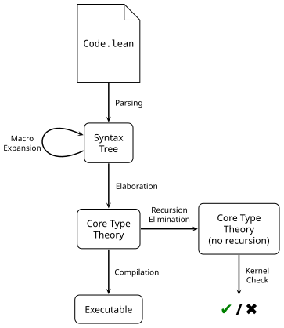

ProofScript — 2. Elaboration and Compilation
Reference home · Grammar: ps-0.9-r2 · Semantic pin: Lean 4.34.0 stable.
Parse by grammatical category, lower owned syntax, and elaborate the result in the recorded environment. An application is elaborated with expected types, implicit arguments, default arguments, coercions, and instance search. Generalized field notation does not always put its receiver in the first explicit parameter. Admission of the resulting declarations establishes a different property from source correspondence. Executable compilation additionally needs relevance, primitive representations, and backend preservation.
Compiler and coverage boundary. Use separate candidate and checked-module APIs. Unknown syntax, unresolved proof obligations, failed checks and exhausted budgets must not become accepted output.
Inherited detail and attribution. The section below is adapted from the Apache-2.0 Lean reference mirrored at Elaboration-and-Compilation/index.html. Source Git blob: 5012e7d6d30da5e5cfb0d32f3af958b6f79ed85d. Its prose, API signatures and native names are retained where they describe the inherited semantics. Selected definition-keyword presentation aliases are recorded separately, not certified by a PSC parser. Native toolchains, intentional errors and historical releases keep their actual identities. The mirror contains rc2 material; the stable pin and stable-delta audit override conflicting claims.
2. Elaboration and Compilation
Roughly speaking, Lean's processing of a source file can be divided into the following stages:
Parsing
The parser transforms sequences of characters into syntax trees of type Syntax. Lean's parser is extensible, so the Syntax type is very general.
Macro Expansion
Macros are transformations that replace syntactic sugar with more basic syntax. Both the input and output of macro expansion have type Syntax.
Elaboration
Elaboration is the process of transforming Lean's user-facing syntax into its core type theory. This core theory is much simpler, enabling the trusted kernel to be very small. Elaboration additionally produces metadata, such as proof states or the types of expressions, used for Lean's interactive features, storing them in a side table.
Kernel Checking
Lean's trusted kernel checks the output of the elaborator to ensure that it follows the rules of the type theory.
Compilation
The compiler transforms elaborated Lean code into executables that can be run.
In reality, the stages described above do not strictly occur one after the other. Lean parses a single command (top-level declaration), elaborates it, and performs any necessary kernel checks. Macro expansion is part of elaboration; before translating a piece of syntax, the elaborator first expands any macros present at the outermost layer. Macro syntax may remain at deeper layers, but it will be expanded when the elaborator reaches those layers. There are multiple kinds of elaboration: command elaboration implements the effects of each top-level command (e.g. declaring inductive types, saving definitions, evaluating expressions), while term elaboration is responsible for constructing the terms that occur in many commands (e.g. types in signatures, the right-hand sides of definitions, or expressions to be evaluated). Tactic execution is a specialization of term elaboration.
When a command is elaborated, the state of Lean changes. New definitions or types may have been saved for future use, the syntax may be extended, or the set of names that can be referred to without explicit qualification may have changed. The next command is parsed and elaborated in this updated state, and itself updates the state for subsequent commands.
2.1. Parsing
Lean's parser is a recursive-descent parser that uses dynamic tables based on Pratt parsing (Pratt, 1973)Vaughan Pratt, 1973. “Top down operator precedence”. In Proceedings of the 1st Annual ACM SIGACT-SIGPLAN Symposium on Principles of Programming Languages. to resolve operator precedence and associativity. When grammars are unambiguous, the parser does not need to backtrack; in the case of ambiguous grammars, a memoization table similar to that used in Packrat parsing avoids exponential blowup. Parsers are highly extensible: users may define new syntax in any command, and that syntax becomes available in the next command. The open namespaces in the current section scope also influence which parsing rules are used, because parser extensions may be set to be active only when a given namespace is open.
When ambiguity is encountered, the longest matching parse is selected. If there is no unique longest match, then both matching parses are saved in the syntax tree in a
choice node to be resolved later by the elaborator. When the parser fails, it returns a Syntax.missing node, allowing for error recovery.
When successful, the parser saves sufficient information to reconstruct the original source file. Unsuccessful parses may miss some information for the regions of the file that cannot be parsed. The SourceInfo record type records information about the origin of a piece of syntax, including its source location and the surrounding whitespace. Based on the SourceInfo field, there are three relationships that Syntax can have to a source file:
SourceInfo.originalindicates that the syntax value was produced directly by the parser.SourceInfo.syntheticindicates that the syntax value was produced programmatically, e.g. by the macro expander. Synthetic syntax may nonetheless be marked canonical, in which case the Lean user interface treats it as if the user had written it. Synthetic syntax is annotated with positions in the original file, but does not include leading or trailing whitespace.SourceInfo.noneindicates no relationship to a file.
The parser maintains a token table that tracks the reserved words that are currently part of the language. Defining new syntax or opening namespaces can cause a formerly-valid identifier to become a keyword.
Each production in Lean's grammar is named. The name of a production is called its kind. These syntax kinds are important, because they are the key used to look up the interpretation of the syntax in the elaborator's tables.
Syntax extensions are described in more detail in a dedicated chapter.
2.2. Macro Expansion and Elaboration
Having parsed a command, the next step is to elaborate it. The precise meaning of
elaboration depends on what is being elaborated: elaborating a command effects a change in the state of Lean, while elaborating a term results in a term in Lean's core type theory. Elaboration of both commands and terms may be recursive, both because of command combinators such as in and because terms may contain other terms.
Command and term elaboration have different capabilities. Command elaboration may have side effects on an environment, and it has access to run arbitrary computations in IO. Lean
environments contain the usual mapping from names to definitions along with additional data defined in
environment extensions, which are additional tables associated with an environment; environment extensions are used to track most other information about Lean code, including simp lemmas, custom pretty printers, and internals such as the compiler's intermediate representations. Command elaboration also maintains a message log with the contents of the compiler's informational output, warnings, and errors, a set of info trees that associate metadata with the original syntax (used for interactive features such as displaying proof states, identifier completion, and showing documentation), accumulated debugging traces, the open section scopes, and some internal state related to macro expansion. Term elaboration may modify all of these fields except the open scopes. Additionally, it has access to all the machinery needed to create fully-explicit terms in the core language from Lean's terse, friendly syntax, including unification, type class instance synthesis, and type checking.
The first step in both term and command elaboration is macro expansion. There is a table that maps syntax kinds to macro implementations; macro implementations are monadic functions that transform the macro syntax into new syntax. Macros are saved in the same table and execute in the same monad for terms, commands, tactics, and any other macro-extensible part of Lean. If the syntax returned by the macro is itself a macro, then that syntax is again expanded—this process is repeated until either a syntax whose kind is not a macro is produced, or until a maximum number of iterations is reached, at which point Lean produces an error. Typical macros process some outer layer of their syntax, leaving some subterms untouched. This means that even when macro expansion has been completed, there still may be macro invocations remaining in the syntax below the top level. New macros may be added to the macro table. Defining new macros is described in detail in the section on macros.
After macro expansion, both the term and command elaborators consult tables that map syntax kinds to elaboration procedures. Term elaborators map syntax and an optional expected type to a core language expression using the very powerful monad mentioned above. Command elaborators accept syntax and return no value, but may have monadic side effects on the global command state. While both term and command elaborators have access to IO, it's unusual that they perform side effects; exceptions include interactions with external tools or solvers.
The elaborator tables may be extended to enable the use of new syntax for both terms and commands by extending the tables. See the section on elaborators for a description of how to add additional elaborators to Lean. When commands or terms contain further commands or terms, they recursively invoke the appropriate elaborator on the nested syntax. This elaborator will then expand macros before invoking elaborators from the table. While macro expansion occurs prior to elaboration for a given “layer” of the syntax, macro expansion and elaboration are interleaved in general.
2.2.1. Info Trees
When interacting with Lean code, much more information is needed than when simply importing it as a dependency. For example, Lean's interactive environment can be used to view the types of selected expressions, to step through all the intermediate states of a proof, to view documentation, and highlight all occurrences of a bound variable. The information necessary to use Lean interactively is stored in a side table called the info trees during elaboration.
Info trees relate metadata to the user's original syntax. Their tree structure corresponds closely to the tree structure of the syntax, although a given node in the syntax tree may have many corresponding info tree nodes that document different aspects of it. This metadata includes the elaborator's output in Lean's core language, the proof state active at a given point, suggestions for interactive identifier completion, and much more. The metadata can also be arbitrarily extended; the constructor Info.ofCustomInfo accepts a Dynamic type. This can be used to add information to be used by custom code actions or other user interface extensions.
2.3. The Kernel
Lean's trusted kernel is a small, robust implementation of a type checker for the core type theory. It does not include a syntactic termination checker, nor does it perform unification; termination is guaranteed by elaborating all recursive functions into uses of primitive recursors, and unification is expected to have already been carried out by the elaborator. Before new inductive types or definitions are added to the environment by the command or term elaborators, they must be checked by the kernel to guard against potential bugs in elaboration.
Lean's kernel is written in C++. There are independent re-implementations in Rust and Lean, and the Lean project is interested in having as many implementations as possible so that they can be cross-checked against each other.
The language implemented by the kernel is a version of the Calculus of Constructions, a dependent type theory with the following features:
- Full dependent types
- Inductively-defined types that may be mutually inductive or include recursion nested under other inductive types
- An impredicative, definitionally proof-irrelevant, extensional universe of propositions
- A predicative, non-cumulative hierarchy of universes of data
- Quotient types with a definitional computation rule
- Propositional function extensionalityFunction extensionality is a theorem that can be proved using quotient types, but it is such an important consequence that it's worth listing separately.
- Definitional η-equality for functions and products
- Universe-polymorphic definitions
- Consistency: there is no axiom-free closed term of type
False
This theory is rich enough to express leading-edge research mathematics, and yet simple enough to admit a small, efficient implementation. The presence of explicit proof terms makes it feasible to implement independent proof checkers, increasing our confidence. It is described in detail by Carneiro (2019)Mario Carneiro, 2019. The Type Theory of Lean. Masters thesis, Carnegie Mellon University and Ullrich (2023)Sebastian Ullrich, 2023. An Extensible Theorem Proving Frontend. Dr. Ing. dissertation, Karlsruhe Institute of Technology.
Lean's type theory does not feature subject reduction, the definitional equality is not necessarily transitive, and it is possible to make the type checker fail to terminate. None of these metatheoretic properties cause problems in practice—failures of transitivity are exceedingly rare, and as far as we know, non-termination has not occurred except when crafting code specifically to exercise it. Most importantly, logical soundness is not affected. In practice, apparent non-termination is indistinguishable from sufficiently slow programs; the latter are the causes observed in the wild. These metatheoretic properties are a result of having impredicativity, quotient types that compute, definitional proof irrelevance, and propositional extensionality; these features are immensely valuable both to support ordinary mathematical practice and to enable automation.
2.4. Elaboration Results
Lean's core type theory does not include pattern matching or recursive definitions. Instead, it provides low-level recursors that can be used to implement both case distinction and primitive recursion. Thus, the elaborator must translate definitions that use pattern matching and recursion into definitions that use recursors.More details on the elaboration of recursive definitions is available in the dedicated section on the topic. This translation is additionally a proof that the function terminates for all potential arguments, because all functions that can be translated to recursors also terminate.
The translation to recursors happens in two phases: during term elaboration, uses of pattern matching are replaced by appeals to
auxiliary matching functions (also referred to as
matcher functions) that implement the particular case distinction that occurs in the code. These auxiliary functions are themselves defined using recursors, though they do not make use of the recursors' ability to actually implement recursive behavior.They use variants of the casesOn construction that is described in the section on recursors and elaboration, specialized to reduce code size. The term elaborator thus returns core-language terms in which pattern matching has been replaced with the use of special functions that implement case distinction, but these terms may still contain recursive occurrences of the function being defined. A definition that still includes recursion, but has otherwise been elaborated to the core language, is called a
pre-definition. To see auxiliary pattern matching functions in Lean's output, set the option pp.match to false.
option
pp.match
Default value: true
(pretty printer) disable/enable 'match' notation
The pre-definition is then sent to the compiler and to the kernel. The compiler receives the pre-definition as-is, with recursion intact. The version sent to the kernel, on the other hand, undergoes a second transformation that replaces explicit recursion with uses of recursors, well-founded recursion, or partial fixpoint recursion. This split is for three reasons:
- The compiler can compile
partialfunctions that the kernel treats as opaque constants for the purposes of reasoning. - The compiler can also compile
unsafefunctions that bypass the kernel entirely. - Translation to recursors does not necessarily preserve the cost model expected by programmers, in particular laziness vs strictness, but compiled code must have predictable performance. The other strategies used to justify recursive definitions result in internal terms that are even further from the program as it was written.
The compiler stores an intermediate representation in an environment extension.
For straightforwardly structurally recursive functions, the translation will use the type's recursor. These functions tend to be relatively efficient when run in the kernel, their defining equations hold definitionally, and they are easy to understand. Functions that use other patterns of recursion that cannot be captured by the type's recursor are translated using well-founded recursion, which is structural recursion on a proof that some measure decreases at each recursive call, or using partial fixpoints, which logically capture at least part of a function's specification by appealing to domain-theoretic constructions. Lean can automatically derive many of these termination proofs, but some require manual proofs. Well-founded recursion is more flexible, but the resulting functions are often slower to execute in the kernel due to the proof terms that show that a measure decreases, and their defining equations may hold only propositionally. To provide a uniform interface to functions defined via structural and well-founded recursion and to check its own correctness, the elaborator proves
equational lemmas that relate the function to its original definition. In the function's namespace, eq_unfold relates the function directly to its definition, eq_def relates it to the definition after instantiating implicit parameters, and N lemmas eq_N relate each case of its pattern-matching to the corresponding right-hand side, including sufficient assumptions to indicate that earlier branches were not taken.
Given the definition of thirdOfFive:
def thirdOfFive : List α → Option α
| [_, _, x, _, _] => some x
| _ => none
equational lemmas are generated that relate thirdOfFive to its definition.
thirdOfFive.eq_unfold states that it can be unfolded to its original definition when no arguments are provided:
thirdOfFive.eq_unfold.{u_1} :
@thirdOfFive.{u_1} = fun {α : Type u_1} x =>
match x with
| [head, head_1, x, head_2, head_3] => some x
| x => none
thirdOfFive.eq_def states that it matches its definition when applied to arguments:
thirdOfFive.eq_def.{u_1} {α : Type u_1} :
∀ (x : List α),
thirdOfFive x =
match x with
| [head, head_1, x, head_2, head_3] => some x
| x => none
thirdOfFive.eq_1 shows that its first defining equation holds:
thirdOfFive.eq_1.{u} {α : Type u}
(head head_1 x head_2 head_3 : α) :
thirdOfFive [head, head_1, x, head_2, head_3] = some x
thirdOfFive.eq_2 shows that its second defining equation holds:
thirdOfFive.eq_2.{u_1} {α : Type u_1} :
∀ (x : List α),
(∀ (head head_1 x_1 head_2 head_3 : α),
x = [head, head_1, x_1, head_2, head_3] → False) →
thirdOfFive x = none
The final lemma thirdOfFive.eq_2 includes a premise that the first branch could not have matched (that is, that the list does not have exactly five elements).
Given the definition of everyOther:
def everyOther : List α → List α
| [] => []
| [x] => [x]
| x :: _ :: xs => x :: everyOther xs
equational lemmas are generated that relate everyOther's recursor-based implementation to its original recursive definition.
everyOther.eq_unfold states that everyOther with no arguments is equal to its unfolding:
everyOther.eq_unfold.{u} :
@everyOther.{u} = fun {α} x =>
match x with
| [] => []
| [x] => [x]
| x :: _ :: xs => x :: everyOther xs
everyOther.eq_def states that a everyOther is equal to its definition when applied to arguments:
everyOther.eq_def.{u} {α : Type u} :
∀ (x : List α),
everyOther x =
match x with
| [] => []
| [x] => [x]
| x :: _ :: xs => x :: everyOther xs
everyOther.eq_1 demonstrates its first pattern:
everyOther.eq_1.{u} {α : Type u} : everyOther [] = ([] : List α)
everyOther.eq_2 demonstrates its second pattern:
everyOther.eq_2.{u} {α : Type u} (x : α) : everyOther [x] = [x]
everyOther.eq_3 demonstrates its final pattern:
everyOther.eq_3.{u} {α : Type u} (x y : α) (xs : List α) :
everyOther (x :: y :: xs) = x :: everyOther xs
Because the patterns do not overlap, no assumptions about prior patterns not having matched are necessary for the equational lemmas.
After elaborating a module, having checked each addition to the environment with the kernel, the changes that the module made to the global environment (including extensions) are serialized to a
.olean file. In these files, Lean terms and values are represented just as they are in memory; thus the file can be directly memory-mapped. All code paths that lead to Lean adding to the environment involve the new type or definition first being checked by the kernel. However, Lean is a very open, flexible system. To guard against the possibility of poorly-written metaprograms jumping through hoops to add unchecked values to the environment, a separate tool lean4checker can be used to validate that the entire environment in a .olean file satisfies the kernel.
In addition to the .olean file, the elaborator produces a .ilean file, which is an index used by the language server. This file contains information needed to work interactively with the module without fully loading it, such as the source positions of definitions. The contents of .ilean files are an implementation detail and may change at any release.
Finally, the compiler is invoked to translate the intermediate representation of functions stored in its environment extension into C code. A C file is produced for each Lean module; these are then compiled to native code using a bundled C compiler. If the precompileModules option is set in the build configuration, then this native code can be dynamically loaded and invoked by Lean; otherwise, an interpreter is used. For most workloads, the overhead of compilation is larger than the time saved by avoiding the interpreter, but some workloads can be sped up dramatically by pre-compiling tactics, language extensions, or other extensions to Lean.
2.5. Initialization
Before starting up, the elaborator must be correctly initialized. Lean itself contains initialization code that must be run in order to correctly construct the compiler's initial state; this code is run before loading any modules and before the elaborator is invoked. Furthermore, each dependency may itself contribute initialization code, e.g. to set up environment extensions. Internally, each environment extension is assigned a unique index into an array, and this array's size is equal to the number of registered environment extensions, so the number of extensions must be known in order to correctly allocate an environment.
After running Lean's own builtin initializers, the module's header is parsed and the dependencies' .olean files are loaded into memory. A “pre-environment” is constructed that contains the union of the dependencies' environments. Next, all initialization code specified by the dependencies is executed in the interpreter. At this point, the number of environment extensions is known, so the pre-environment can be reallocated into an environment structure with a correctly-sized extensions array.
syntax
Initialization Blocks
An initialize block adds code to the module's initializers. The contents of an initialize block are treated as the contents of a do block in the IO monad.
Sometimes, initialization only needs to extend internal data structures by side effects. In that case the contents are expected to have type IO Unit:
command ::= ...
| initialize
doSeqItem*
Initialization may also be used to construct values that contain references to internal state, such as attributes that are backed by an environment extension. In this form of initialize, initialization should return the specified type in the IO monad.
command ::= ...
| initialize ident : term ←
doSeqItem*
syntax
Compiler-Internal Initializers
Lean's internals also define code that must run during initialization. However, because Lean is a bootstrapping compiler, special care must be taken with initializers defined as part of Lean itself, and Lean's own initializers must run prior to importing or loading any modules. These initializers are specified using builtin_initialize, which should not be used outside the compiler's implementation.
command ::= ...
| builtin_initialize
doSeqItem*
command ::= ...
| builtin_initialize ident : term ←
doSeqItem*
Preserved grammar annotations
These are inherited explanatory/output displays, not additional source programs or newly executed results.
Display 1
`declModifiers` is the collection of modifiers on a declaration:
* a doc comment `/-- ... -/`
* a list of attributes `@[attr1, attr2]`
* a visibility specifier, `private` or `public`
* `protected`
* `noncomputable`
* `unsafe`
* `partial` or `nonrec`
All modifiers are optional, and have to come in the listed order.
`nestedDeclModifiers` is the same as `declModifiers`, but attributes are printed
on the same line as the declaration. It is used for declarations nested inside other syntax,
such as inductive constructors, structure projections, and `let rec` / `where` definitions.
Inherited reference figures
These figures describe the native reference, not a claim about an implemented PSC runtime.

Caption labels: Code.lean SyntaxTree Core TypeTheory Core TypeTheory(no recursion) Executable ✔ / ✖ Parsing Elaboration Compilation RecursionElimination MacroExpansion KernelCheck